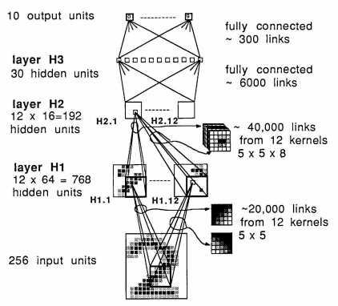

Convolutional Layers¶
Preparations¶
import numpy as np
from scipy.optimize import minimize
import matplotlib.pyplot as plt
from matplotlib import image
plt.rcParams.update({
"text.usetex": True,
"font.family": "sans-serif",
"font.size": 10,
})
from utils import *
np.set_printoptions(precision=5, suppress=True)
Single Image Convolution¶
A convolution is done by multiplying a pixel’s and its neighboring pixels color value by a matrix (kernel matrix).
Here, we implement a convolution function for a single image. The implemenation is as follows, where:
img_inis the image as a 2D matrixkernelis the filter kernel matrixSis the stride number
def convolve(img_in, kernel, S):
F, _ = kernel.shape
nr, nc, = img_in.shape
R = np.arange(0, nr - (F - S), S)
C = np.arange(0, nc - (F - S), S)
img_out = np.zeros([len(R), len(C)])
for i, r in enumerate(R):
for j, c in enumerate(C):
img_out[i, j] = np.sum(kernel * img_in[r:r+F, c:c+F])
return img_out
Typically, when s = 1, the dimension should not change. This is possible if the image has been previously padded. For a 3 x 3 filter matrix, we need 1 layer of padding. For a 5 x 5 filter matrix, we will need two layes of padding. However, if the filter dimensions are even numbers, we will not be able to apply uniform padding. Check this material for more infomation.
Single Image Pooling¶
Pooling is a downsampling technique used in convolutional neural networks (CNNs) to reduce spatial dimensions of feature maps while preserving important features. It achieves this by selecting the maximum/mean value within each small, overlapping region (or “window”) of the feature map.
def maxpool(img_in, F, S):
nr, nc, = img_in.shape
R = np.arange(0, nr - (F - S), S)
C = np.arange(0, nc - (F - S), S)
img_out = np.zeros([len(R), len(C)])
for i, r in enumerate(R):
for j, c in enumerate(C):
img_out[i, j] = np.max(img_in[r:r+F, c:c+F])
return img_out
def meanpool(img_in, F, S):
nr, nc, = img_in.shape
R = np.arange(0, nr - (F - S), S)
C = np.arange(0, nc - (F - S), S)
img_out = np.zeros([len(R), len(C)])
for i, r in enumerate(R):
for j, c in enumerate(C):
img_out[i, j] = np.mean(img_in[r:r+F, c:c+F])
return img_out
Single Image Normalization¶
This is a simple min-max normalization. This process causes the pixel values to range from 0 to 1.
def normalize(img_in):
min_val = np.min(img_in)
max_val = np.max(img_in)
return (img_in - min_val) / (max_val - min_val)
Batch Convolution¶
Batch convolution involves:
Dimages with a dimension ofW x HI x Ofilters with a kernel spatial dimension ofF x FS(stride number)P(padding layer number)
def batch_convolve(input3d, filter4d, bias1d, P, S=1):
# Volumetric matrix is addressed by using 3 indices: [first index, second index, third index]
# Depth is represented first index
H, W, I = input3d.shape;
F, _, _, O = filter4d.shape;
# Do ZERO padding
input3d = np.pad(input3d, ((P, P), (P, P), (0, 0)), 'constant', constant_values=((0, 0), (0, 0),(0, 0)))
W2 = np.int32((W - F + 2 * P) / S + 1)
H2 = np.int32((H - F + 2 * P) / S + 1)
O = np.int32(O)
I = np.int32(I)
output3d = np.zeros((W2, H2, O), dtype=np.float32)
for o in range(O):
output3d[:, :, o] = output3d[:, :, o] + bias1d[o]
for i in range(I):
input = input3d[:, :, i]
output3d[:, :, o] = output3d[:, :, o] + convolve(input, kernel=filter4d[:, :, i, o], S=S)
return output3d
Batch Pooling¶
Batch pooling involves:
Dimages with a dimension ofW x HF(spatial dimension)S(stride number)
def batch_maxpool(input3d, F, S):
H, W, D = input3d.shape;
W2 = np.int32((W - F) / S + 1)
H2 = np.int32((H - F) / S + 1)
D2 = np.int32(D)
output3d = np.zeros((W2, H2, D2), dtype=np.float32)
for d2 in range(D2):
input = input3d[:, :, d2]
output3d[:, :, d2] = maxpool(input, F, S)
return output3d
def batch_meanpool(input3d, F, S):
H, W, D = input3d.shape;
W2 = np.int32((W - F) / S + 1)
H2 = np.int32((H - F) / S + 1)
D2 = np.int32(D)
output3d = np.zeros((W2, H2, D2), dtype=np.float32)
for d2 in range(D2):
input = input3d[:, :, d2]
output3d[:, :, d2] = meanpool(input, F, S)
return output3d
Batch Normalization¶
def batch_normalization(input3d):
H, W, D = input3d.shape;
output3d = np.zeros((W, H, D), dtype=np.float32)
for d in range(D):
output3d[:, :, d] = normalize(input3d[:, :, d])
return output3d
ReLU Activation¶
def ReLU(input3d):
return (np.maximum(0, input3d))
Demonstrations¶
Batch Convolution of an Image¶
For the demonstration, we will load a colored image (3 channels). We will first need to re-arrange the image matrix such that it is in the desired format, which is: [Depth x Width x Height].
%matplotlib inline
baboon = np.int32(image.imread('./baboon.png') * 255.0)
print("image dimension:", baboon.shape)
plt.imshow(baboon)
plt.show()
image dimension: (512, 512, 3)
Show the images separately.
%matplotlib inline
for i in range(3):
plt.subplot(1, 3, i+1)
plt.imshow(baboon[:, :, i], cmap='Greys')
plt.axis('off')
Let’s apply (3 x 3 x 3 x 2) arbitrary filters:
filter kernel dimesion:
3 x 3number of inputs:
3number of outputs:
2
F = np.zeros((3, 3, 3, 2))
F[:,:, 0, 0] = np.array([[0.0625, 0.125, 0.0625],
[0.125, 0.25, 0.125],
[0.0625, 0.125, 0.0625]])
F[:,:, 0, 1] = np.array([[-2, -1, 0],
[-1, 1, 1],
[ 0, 1, 2]])
F[:,:, 1, 0] = np.array([[-1, -1, -1],
[-1, 8, -1],
[-1, -1, -1]])
F[:,:, 1, 1] = np.array([[1, 0, -1],
[2, 0, -2],
[1, 0, -1]])
F[:,:, 2, 0] = np.array([[-1, -1, -1],
[-1, 8, -1],
[-1, -1, -1]])
F[:,:, 2, 1] = np.array([[-1, 0, 1],
[-2, 0, 2],
[-1, 0, 1]])
bias = np.zeros(2)
output = batch_convolve(baboon, F, bias, 1)
output = batch_meanpool(output, 2, 2)
output = batch_normalization(output)
output = ReLU(output)
for i in range(output.shape[2]):
plt.subplot(1, 3, i+1)
# Rescale the weights to be between 0 and 255
plt.imshow(output[:,:, i]*255, cmap='Greys')
plt.axis('off')

print("Shape of the input image")
print(baboon.shape)
print("Shape of the output image")
print(output.shape)
Shape of the input image
(512, 512, 3)
Shape of the output image
(256, 256, 2)
LeNet-1¶

import h5py
with h5py.File("./datasets/usps/usps.h5", 'r') as hf:
x_train = hf.get("train").get('data')[:].reshape(-1, 16, 16) * 255.0
y_train = np.int32(hf.get("train").get('target')[:])
x_test = hf.get("test").get('data')[:].reshape(-1, 16, 16) * 255.0
y_test = np.int32(hf.get("test").get('target')[:])
print("Dimension numbers :", x_train.shape[1] * x_train.shape[2])
print("Number of data :", x_train.shape[0])
Dimension numbers : 256
Number of data : 7291
# Peforming reshaping operation
x_train = x_train.reshape(x_train.shape[0], 16, 16, 1)
x_test = x_test.reshape(x_test.shape[0], 16, 16, 1)
for i in range(100):
X = x_train[i,:,:]
plt.subplot(20, 10, i + 1)
plt.imshow(X.astype('uint8'), cmap='Greys')
plt.axis('off')

We have pretrained the network in lenet1.ipynb.
w1 = np.load('./datasets/usps/weight-1.npy')
w2 = np.load('./datasets/usps/weight-2.npy')
w3 = np.load('./datasets/usps/weight-3.npy')
w4 = np.load('./datasets/usps/weight-4.npy')
w5 = np.load('./datasets/usps/weight-5.npy')
w6 = np.load('./datasets/usps/weight-6.npy')
w7 = np.load('./datasets/usps/weight-7.npy')
w8 = np.load('./datasets/usps/weight-8.npy')
w9 = np.load('./datasets/usps/weight-9.npy')
w10 = np.load('./datasets/usps/weight-10.npy')
x_test.shape
(2007, 16, 16, 1)
y_predict = []
for k in range(x_test.shape[0]):
output1 = batch_convolve(x_test[k].reshape(16, 16, 1), w1, w2, 2)
output2 = ReLU(output1)
output3 = batch_maxpool(output2, 2, 2)
output4 = batch_convolve(output3, w3, w4, 2)
output5 = ReLU(output4)
output6 = batch_maxpool(output5, 2, 2)
output7 = output6.flatten()
output7 = output7.reshape(1, 192)
y1 = output7 @ w5 + w6
y2 = np.maximum(0, y1)
y3 = y2 @ w7 + w8
y4 = np.maximum(0, y3)
y5 = y4 @ w9 + w10
y_predict.append(np.argmax(y5))
y_predict = np.array(y_predict)
# Predict on the validation set
val_acc = (y_predict == y_test).mean()
print('Validation accuracy : ', val_acc)
Validation accuracy : 0.953662182361734